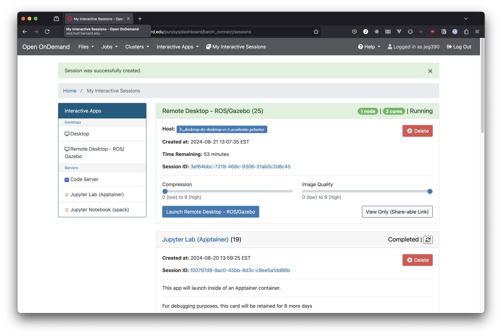

Remote Desktop (ROS / Gazebo / Matlab)
This remote desktop application is configured with Matlab, as well as the robotics software ROS and Gazebo. It also comes with a code editor, VS Codium, and a standard Firefox web browser.
The application launches with the standard settings for CPUs and the number of hours in the reservation. When the application is available, there are some additional options for your connection to the application. You can adjust the image quality and the compression level. These settings are visible in the screenshot below.

Compression adjusts the amount of image compression that your remote desktop connection is put through. Compression requires resources on the CPU hosting the remote desktop, but reduces the amount of bandwidth that the connection uses. If you're experiencing lagginess in your connection to the remote desktop, you can try increasing the compression, but you may need to allocate more CPUs than your work would otherwise require.
Image quality is related to compression, but changes how the desktop appears. Low quality values will result in more compression artifacts in the image from the remote desktop, but can further reduce bandwidth. Keep this as high as you can if your connection is stable, or as low as you can tolerate if your internet connection is poor.
Using the remote desktop
You should be able to launch all of the applications that you need from their desktop icons. There is also a terminal that runs in the remote desktop if needed. Note that the remote desktop is running inside of a container, so it does not have access to applications available in the cluster itself, like Slurm commands or Spack packages.
Black screen on idle sessions
There is a known issue with remote desktop sessions where if left idle for too long, they can fail to reconnect. If this happens, it's best to start a new session, then cancel the old one. If you've found a better solution for avoiding or re-connecting to sessions, please let us know at atg@fas.harvard.edu.
To cancel the old session, start a terminal session and use the
scancel command to cancel the job. In the example in the screenshot above, the
job ID is 25 (visible in parentheses next to the app name), so in the terminal
you would use scancel 25 to cancel that session and free up those resources.
Canceling unused sessions keeps the cluster's resources available for new
sessions, for both you and your classmates.
Logging out of a remote desktop session will also end the session, so it's the nice thing to do when you stop working.